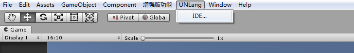
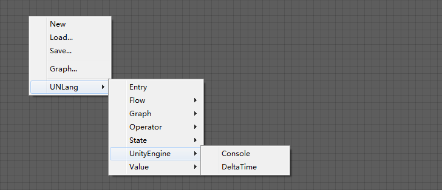
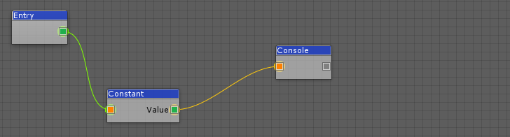
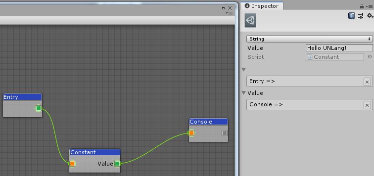
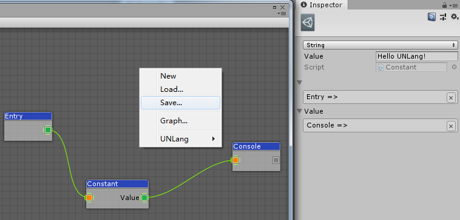

让我们在Unity的console窗口中打印
Hello UNLang!。
① 创建Hello UNLang!脚本
- 切回到Unity编辑器，你会看到
UNLang/IDE...菜单。
 - 打开
IDE窗口。 - 右键点击
IDE窗口，你会在右键菜单中看到所有可以执行的操作。
 - 添加
Entry，Constant和Console模块，然后如下图连接：
 - 选中
Constant模块，在Inspector窗口中选择String类型，然后输入Hello UNLang!。
 - 在右键菜单中存储脚本到本地项目中，例如
[UnityProject]/Assets/Resources/1.bytes。

② 执行脚本
- 在激活的场景中创建一个GameObject。
- 挂接一个空的MonoBehaviour。
在这个空的MonoBehaviour中添加如下代码：
using UnityEngine;
using UNLang;
using UNode;
public class NewBehaviourScript : MonoBehaviour
{
// UNLang的实例，用来执行脚本。
private LangInstance instance = null;
void Start()
{
// 接管装载器，因为我们把脚本文件存放在了Resources目录下了。
NodeLoader.Load = file =>
{
// 移除"Resources"相对路径以及文件扩展名。
file = file.Replace("/Resources/", "");
file = file.Substring(0, file.IndexOf("."));
return Resources.Load<TextAsset>(file).bytes;
};
// 创建UNLang实例。
this.instance = new LangInstance();
// 装载脚本文件"1.bytes"。
this.instance.Load("1.bytes");
// 执行"Entry"模块作为入口。
this.instance.Run<Entry>();
}
void Update()
{
// 更新UNLang实例。
this.instance?.Update();
}
}运行并在Unity的console窗口中看到
Hello UNLang!，那么恭喜！